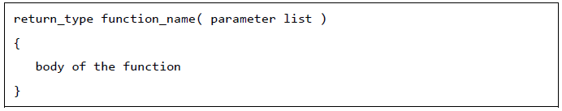
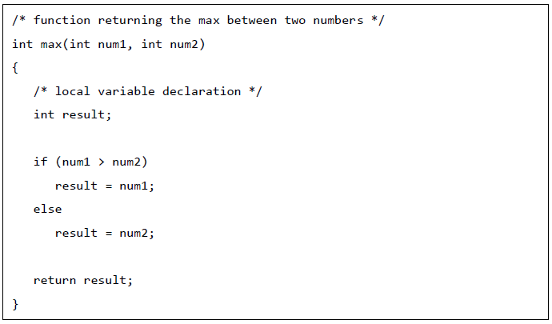
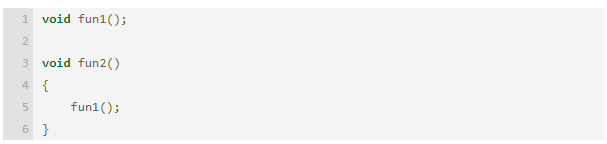
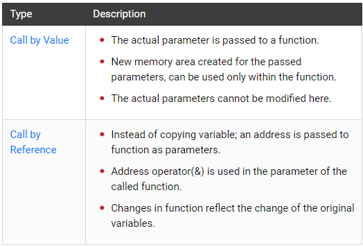

FUNCTIONS In C Programming
A function is a group of statements that together perform a task. Every C program has at least one function, which is main(), and all the most trivial programs can define additional functions.
You can divide up your code into separate functions. How you divide up your code among different functions is up to you, but logically the division is such that each function performs a specific task.
A function declaration tells the compiler about a function's name, return type, and parameters. A function definition provides the actual body of the function.
The C standard library provides numerous built-in functions that your program can call. For example, strcat() to concatenate two strings, memcpy() to copy one memory location to another location, and many more functions. A function can also be referred as a method or a sub-routine or a procedure, etc.Defining a Function
The general form of a function definition in C programming language is as follows:
A function definition in C programming consists of a function header and a function body. Here are all the parts of a function:
* Return Type:
A function may return a value. The return_type is the data type of the value the function returns. Some functions perform the desired operations without returning a value. In this case, the return_type is the keyword void.* Function Name:
This is the actual name of the function. The function name and the parameter list together constitute the function signature.* Parameters:
A parameter is like a placeholder. When a function is invoked, you pass a value to the parameter. This value is referred to as actual parameter or argument. The parameter list refers to the type, order, and number of the parameters of a function. Parameters are optional; that is, a function may contain no parameters.* Function Body:
The function body contains a collection of statements that define what the function does.Given below is the source code for a function called max(). This function takes two parameters num1 and num2 and returns the maximum value between the two:
Example
function declaration
A function declaration tells the compiler about a function's name, return type, and parameters. A function definition provides the actual body of the function. The C standard library provides numerous built-in functions that your program can call.
Syntax of Function Declaration
return_type function_name(type arg1, type arg2 .....);For Example
Declaration of a function with no input parameters
--->void printMatrix();
Declaration of a function with one input parameter and integer return type
--->int isEvenNumber(int num);
Declaration of a function with multiple input parameter and integer return type.
--->int getSum(int num1, int num2);
Declaration of a function with no input parameters and integer return type.
--->int getRandomNumber() ;
Important Points about Function Declaration.
*Function declaration in C always ends with a semicolon.
*By default the return type of a functi on is integer(int) data type.
*Function declaration is also known as function prototype.
*Name of parameters are not compulsory in function declaration only their type is required. Hence following declaration is also valid.
int getSum(int, int);*If function definition is written before main function then function declaration is not required whereas, If function definition is written after main function then we must write function declaration before main function.
calling function
The calling function is exactly what it sounds like - the function that calls your function. Consider this example:
In the above code snippet, fun2() is the calling function for fun1(). In general, a C program constitutes a chain of calling functions that have the main() at one end and the currently executing function at the other end. This chain (with intermediate parameter values and return types) is what constitutes a call stack.
Function Arguments
A function in C can be called either with arguments or without arguments. These function may or may not return values to the calling functions. All C functions can be called either with arguments or without arguments in a C program. Also, they may or may not return any values.
While calling a function, the arguments can be passed to a function in two ways, Call by value and call by reference.
call by value
The call by value method of passing arguments to a function copies the actual value of an argument into the formal parameter of the function. In this case, changes made to the parameter inside the function have no effect on the argument.
By default, C programming uses call by value to pass arguments. In general, it means the code within a function cannot alter the arguments used to call the function.
Example
#include
/* function declaration */int addition(int num1, int num2);
int main()
{
/* local variable definition */ int answer;
int num1 = 10;
int num2 = 5;
/* calling a function to get addition value */ answer = addition(num1,num2);printf("The addition of two numbers is: %d\n",answer);
return 0;
}
/* function returning the addition of two numbers */int addition(int a,int b)
{
return a + b;
}
Output
The addition of two numbers is: 15
Call By Referance
The call by reference method of passing arguments to a function copies the address of an argument into the formal parameter. Inside the function, the address is used to access the actual argument used in the call. It means the changes made to the parameter affect the passed argument.
To pass a value by reference, argument pointers are passed to the functions just like any other value. So accordingly, you need to declare the function parameters as pointer types as in the following function swap(), which exchanges the values of the two integer variables pointed to, by their arguments.
Example
#include
/* function declaration */int addition(int *num1, int *num2);
int main()
{
/* local variable definition */ int answer;
int num1 = 10;
int num2 = 5;
/* calling a function to get addition value */ answer = addition(&num1,&num2);
printf("The addition of two numbers is: %d\n",answer);
return 0;
}
/* function returning the addition of two numbers */int addition(int *a,int *b)
{
return *a + *b;
}
Output
The addition of two numbers is: 15